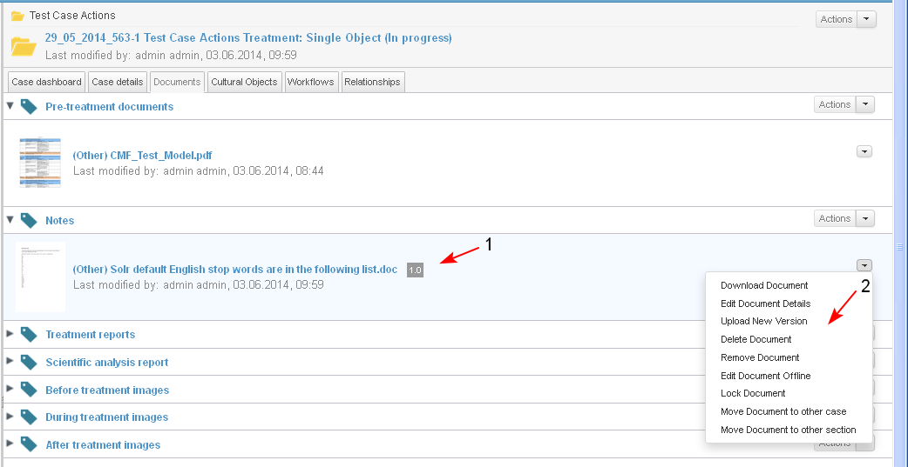

The action is used when the user decides to cancel the process of editing a document after the document has been locked for editing offline.
Preconditions
- The action is performed only for documents which are locked for edit only by the user who has locked the document or by the administrator of the system.
- The button "Cancel Edit Document" is active only if the action Edit Document Offline has been performed and the document is locked for editing.
- The user starts the action from:
- Personal Dashboard/ My Documents dashlet/ Actions/ Cancel Edit Document for a selected document
- Case Dashboard/ Documents dashlet/ Actions/ Cancel Edit Document for a selected document
- Case Dashboard/ tab Documents/ Actions/ Cancel Edit Document for a selected document (1-2-3)
- Document preview/ Actions/ Cancel Edit Document

- When the action "Cancel Edit Document" is selected the following operations are carried out automatically:
- the document is unlocked for edit by other users and the message "The document is locked by <user name>" is removed (1).
- the action "Edit Document Offline" is activated and the action "Cancel Edit Document" is hidden (2)
